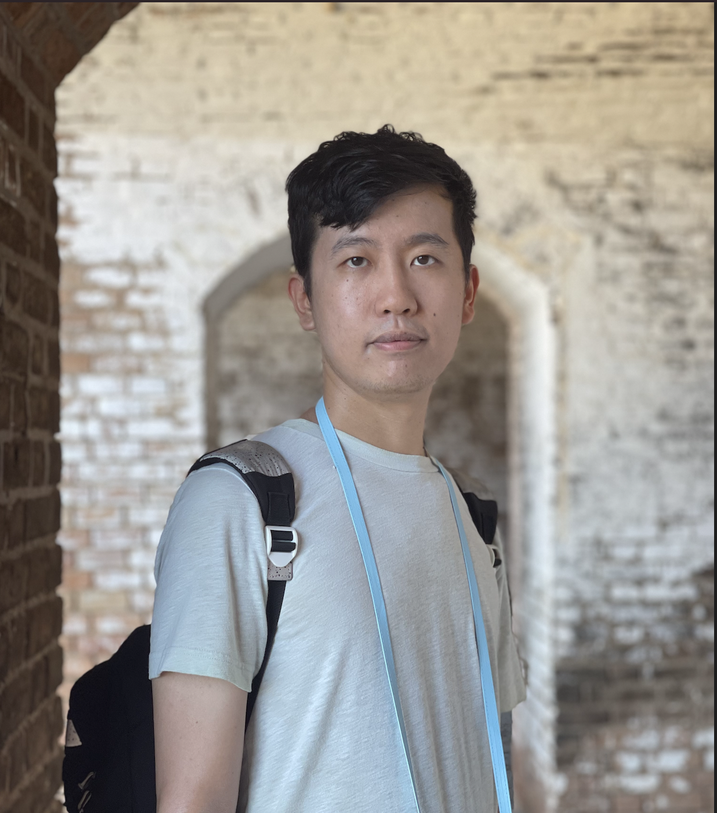

Qi Yang, Ph.D student |
(杨琪) |
|  |
Medical-image Analysis and Statistical Interpretation Laboratory
E-mail: qi.yang at vanderbilt edu [Google Scholar] [GitHub] created: December 2020 |
Biography
I am second-year ph.D student in the Department of Electrical Engineering and Computer Science, Vanderbilt University
supervised by Dr.Bennett Landman. Previously, I reveived the B.S and M.S degree from Department of Optics and Photonics
in Beijing Institute of technology in 2016 and 2019 respectively, advised by Dr Dr.Jian Yang.
My reseach interests lie in the filed of machine learning, statistical analysis, diffusion MRI and medical image analysis. My current project is learning white matter segmentation from T1 weighted MRI without diffusion weighted MRI image.
My reseach interests lie in the filed of machine learning, statistical analysis, diffusion MRI and medical image analysis. My current project is learning white matter segmentation from T1 weighted MRI without diffusion weighted MRI image.
Selected Publications |
 |
Pandora: 4-D White Matter Bundle Population-Based Atlases Derived from Diffusion MRI Fiber Tractography
[PDF]
[Code]
Colin B Hansen*, Qi Yang*, Ilwoo Lyu, Francois Rheault, Cailey Kerley, Bramsh Qamar Chandio,Shreyas Fadnavis, Owen Williams, Andrea T. Shafer, Susan M. Resnick, David H. Zald, Laurie Cutting, Warren D Taylor, Brian Boyd, Eleftherios Garyfallidis, Adam W Anderson, Maxime Descoteaux,Bennett A Landman, Kurt G Schilling. * represents equal contribution accpeted Neuroinform (2020) |
|
|
PreQual: An automated pipeline for integrated preprocessing and quality assurance of diffusion weighted MRI images
[PDF]
[Code]
Leon Y. Cai, Qi Yang, Colin B. Hansen, Vishwesh Nath, Karthik Ramadass, Graham W. Johnson, Benjamin N. Conrad, Brian D. Boyd, John P. Begnoche, Lori L. Beason-Held, Andrea T. Shafer, Susan M. Resnick, Warren D. Taylor, Gavin R. Price, Victoria L. Morgan, Baxter P. Rogers, Kurt G. Schilling, Bennett A. Landman. submmitted to magnetic resonance in medicine 2020 |
|
|
MASiVar: Multisite, Multiscanner, and Multisubject Acquisitions for Studying Variability in Diffusion Weighted Magnetic Resonance Imaging
[PDF]
[Code]
Leon Y. Cai, Qi Yang, Praitayini Kanakaraj, Vishwesh Nath, Allen T. Newton, Heidi A. Edmonson, Jeffrey Luci, Benjamin N. Conrad, Gavin R. Price, Colin B. Hansen, Cailey I. Kerley, Karthik Ramadass, Fang-Cheng Yeh, Hakmook Kang, Eleftherios Garyfallidis, Maxime Descoteaux, Francois Rheault, Kurt G. Schilling, and Bennett A. Landman submmitted to magnetic resonance in medicine 2020 |
Award
|